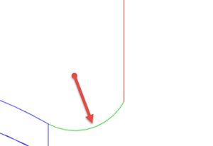

<div id="rotary_finishing_entry_radius"><p>進入移動の半径を指定します。</p>
<table class="tipTable" cellspacing="10">
<tr>
<td><center></center></td>
</tr><tr>
<td><center><p><b>進入半径</b></p></center></td>
</tr></table>
</div>